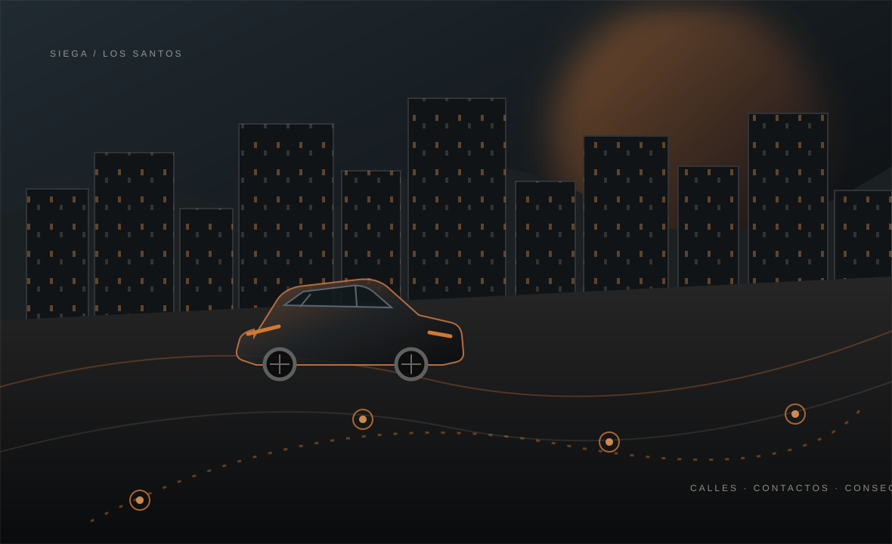

CIVIL ILEGAL
Actividades E y D
SIEGA COMMUNITY / GUÍA DEL SISTEMA ILEGAL
Contactos, acuerdos y decisiones. Una guía clara para entender cómo empieza el rol ilegal y hasta dónde puede crecer cada organización.

El sistema ilegal conecta personas, organizaciones y actividades. Se empieza con lo que el personaje puede construir por su cuenta; avanzar significa sostener relaciones, cumplir acuerdos y asumir consecuencias.
Las mafias generan contactos, encargos y suministro mediante rol. Las bandas crean oportunidades para las PDB. Ningún rango convierte a una organización en dueña automática de recursos ni le permite saltarse las reglas de una actividad.
ASÍ SE CONECTAN ↘Actividades E y D
Hasta clase C
Progresión por nivel
Encargos y acuerdos IC
CADA ETAPA ABRE POSIBILIDADES
El acceso marca el techo de actividades. No otorga armas, plazas ni suministros automáticamente.
Puede participar en actividades publicadas de clase E y D. Máximo general de tres civiles, salvo que la ficha permita menos.
Construye identidad, cohesión y relaciones. Puede participar hasta C; no puede entrar en B ni mediante apoyo contratado.
Abre actividades B cuando la ficha esté publicada y la organización cumpla los cupos y requisitos vigentes.
Amplía el acceso a operaciones A. El límite es un máximo por organización y no una obligación semanal.
Puede optar a S y, con ficha disponible, a un máximo de una actividad S+ al mes.
La progresión se interpreta en rol. Actividad, continuidad, identidad, acuerdos cumplidos y responsabilidad importan más que repetir robos o acumular dinero. Una mafia puede abrir una relación IC, pero no concede ascensos ni excepciones administrativas por sí sola.
MÁXIMOS COMPARTIDOS POR ORGANIZACIÓN
Los miembros comparten el cupo de su organización. Las clases E y D no tienen cupo general, salvo límites propios de cada actividad.
Diario: 00:00 · Semanal: lunes 00:00 · Mensual: día 1, 00:00 Hora peninsular
UNA FICHA POR ACTIVIDAD
Filtra por clase y abre cada ficha para ver sus mínimos, aforo y cierre. “Pendiente” significa que no se puede iniciar hasta que se publique la ficha completa.
| CLASE / ACTIVIDAD | POLICÍA MÍNIMA | AFORO | INICIO Y CIERRE | Detalle |
|---|
No encontramos actividades con ese filtro.
UN PROCESO DISTINTO SEGÚN LA CLASE
El mínimo policial, la aceptación y el entorno cumplen funciones diferentes. La ficha de cada actividad indica exactamente qué corresponde.
No se solicita por /robos. Un aviso automático no sustituye un entorno cuando corresponde.
/robos y espera aceptación.La aceptación coordina la respuesta. No reemplaza el entorno ni autoriza aforos superiores.
Una incidencia técnica validada se revisa con Administración; no duplica automáticamente el botín.
¿Qué hace cada cosa?/robos = pedir coordinación para clase C o superior. /entorno = describir IC lo ocurrido. Aviso automático = alerta de una mecánica concreta.
EL MARCO COMÚN
Las fichas específicas pueden ser más restrictivas. Si hay contradicción, prevalece la normativa hasta que Administración publique una corrección.
No se inician actos delictivos durante los 25 minutos anteriores ni posteriores a cada reinicio.
25 + 25 MINConserva la grabación de roles ilegales durante al menos dos días.
2 DÍASArmas blancas hasta D. No hay armas de fuego en E, D o C. Desde B, solo según ficha y progresión.
FUEGO · B+Superdeportivos desde C. VDM prohibido. Desde un vehículo solo se dispara a ruedas; conductor detenido por completo.
SUPER · C O SUPERIORMáximo general de 30 minutos desde la retención; solo se prolonga con aceptación expresa.
30 MINLos pagos, compras y ventas monetarias del circuito usan el objeto Dinero negro (black_money).
CONSULTA LA VERSIÓN COMPLETA
La guía ayuda a orientarse. La normativa completa y las fichas publicadas son las que determinan el procedimiento.
Cargando documento…
LO ESENCIAL, SIN VUELTAS
Si una respuesta depende de una ficha pendiente, no se asume: la actividad permanece cerrada hasta publicarla.
No. Un civil puede participar en actividades publicadas de clase E y D, respetando sus mínimos y límites. La organización amplía el recorrido, no es requisito para iniciar rol ilegal.
No. El camello recibe encargos de una sola banda, llega como máximo a actividades D y no participa en robos ni se registra con un subrol de Discord.
No. Son cosas distintas. Los robos de clase C o superior requieren solicitud aceptada antes de desplazarse; si la ficha exige /entorno, se envía antes de comenzar.
No. E y D siguen la salida de su ficha. Los C y B establecidos exigen permanecer en la escena tras completar hasta la llegada policial. Importación tiene un procedimiento de huida y entrega diferente.
No. Las armas de fuego están prohibidas en E, D y C. Desde B dependen de la ficha y de la progresión aprobada. Tener un arma no cambia la clase permitida.
No. Una ficha pendiente no habilita el robo. Esto se aplica, entre otros, a actividades S/S+, los niveles superiores de casas y el furgón blindado grande.
ESTADO DEL DOCUMENTO
Este sitio resume la normativa v1.2 y la guía v1.1 preparadas para revisión. No confirma que todos los sistemas estén instalados ni que cada actividad esté habilitada en el servidor.
CONSULTAR DOCUMENTOS ↗ACTIVIDADES PUBLICADASAplican sus reglas, cupos y mínimos policiales.
FICHAFICHA PENDIENTENo se inicia hasta completar y publicar todos sus límites.
CERRADAECONOMÍA Y RECETASConfiguración interna; no forma parte de esta guía pública.
INTERNAVERSIÓN OFICIALEntra en vigor cuando Administración la publique.
REVISIÓN